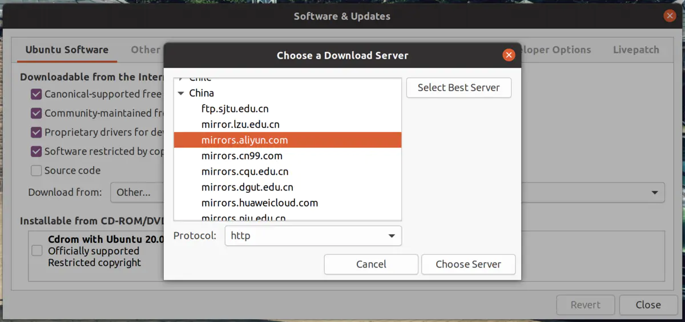
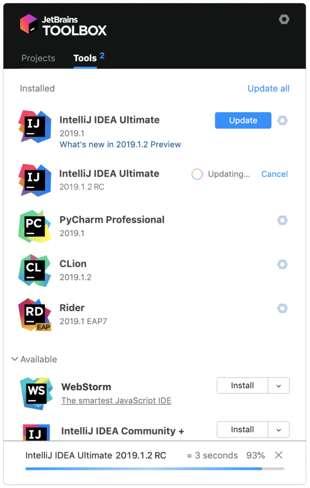

知识管理｜生产力工具组成你的个人知识库
今年2月初的时候，在简书平台发布了《个人知识库软件应用及推荐》，里面的“思维导图”为1.0版本，后来发现仍有诸多不足，历经多次修改，都改到怀疑人生了，直到现在的4.0版，基本完成定型了。之前接触过很多软件工具，大浪淘沙后留下适合自己的工具来完善自己的体系，逐渐形成“个人知识库”。希望这篇文章能给大家带来启发。善用工具，善用佳软，才能得心应手，事半功倍。
个人知识库分为4大系列，分别为：思维管理(思维导图)、时间管理、知识管理、文件管理，效率工具(生产力工具)，下方有另外的两个系列，分别为：护眼工具、手机记录类APP(优秀手机软件)，几大系列生产力工具组成强大的个人知识库。

第一章：思维管理
思维管理，也叫思维导图、脑图、树形图，而思维导图在广阔的市场上有诸多的国内外软件厂商彼此竞争。
1、传统基础型的思维导图
XMind或XMind 2020，XMind为传统版本，而2020版为新版本，2020版原名称为XMind：ZEN，后于2020年3月23日更名为XMind 2020，作为国内老牌的思维导图软件，也是国内最多人使用的思维导图之一，支持导入及导出markdown格式；
MindMaster，中文名为：亿图思维导图，于2017年上线，作为新秀的思维导图软件，估计以后的日子成为XMind公司的主要竞争对手；
，为加拿大Corel公司出品的思维导图，适合企业使用，该公司有两个著名度较高的绘图软件，分别为CorelDRAW和Corel PaintShop，分别对应Abode公司的Photoshop和Adobe Illustrator；
Xmind为国内历史悠久的思维导图，MindMaster为后来追上的思维导图，建议两者择一而用；
2、能画流程图的思维导图软件
Edraw Max
，中文名称为：亿图图示，是一款矢量绘图图表软件，相当于微软的Visio，功能介于Visio和Adobe Illustrator之间，能绘制流程图、思维导图、组织架构图、网络图、平面布置图、甘特图、各种图表等，9.4版本为旧版本图标，后从10.0版本开始整合MindMaster新引擎，绘制的思维导图更加美观，和MindMaster(亿图思维导图)绘制的思维导图基本一样，还改进了一直以来存在连接线的“吸附问题”和“拉伸问题”，使用更加平滑流畅，建议安装10.0后的版本，使用感觉更加良好，其中10.0.2为最后一个不需登录账号使用的版本，10.0.4版本增加登录账号验证，登录账号是国内软件厂商的普遍做法，登录账号验证后无论在何处都可使用，均可下载网友制作分享的各类模板；

IAuto流程图
，简称：IA，于2019年底上线的新软件，其官网到目前为止仍未上线，暂在国内某第一自媒体平台推广，支持绘制流程图、树状图(思维导图)、甘特图、数字曲线等，功能仍在不断推陈出新，而另一个矢量绘图软件
蚂蚁画图
的操作界面与之有几分相似；

WPS 2019
，注意的是2019年版才加入绘制流程图和思维导图等功能，专业版也有此功能，在文字处理组件的插入功能里面，不开通会员则源文件保存在云空间，只能导出图片格式和PDF格式，不能导出源文件和SVG格式；开通会员特权，则思维导图和流程图则保存为pos格式，但云盘保存的思维导图为pof格式，而流程图则为pom格式；

diagrams.net，原名为：draw.io，开源软件；
3、大纲式思维导图WriteMapper，该软件采用了节点+文字编辑器的形式，无需在单独的脑图、大纲工具和编辑工具之间来回切换，即是将思维导图软件和记事本合二为一，并对它们的功能进行了整合，支持多种格式，如HTML、TXT、Markdown、RTF 和 DOCX 等格式；
BlinkMind，是GitHub开源代码仓库的开源软件，支持思维导图与大纲笔记无缝切换；
4、幻灯片式思维导图Focusky动画演示大师，由万彩信息技术出品。可创建思维导图风格的动态幻灯片，听说需要登陆帐号才能使用，输出格式为PDF，不能导出图片格式，实属遗憾；
5、网状结构式思维导图TheBrain，黑马软件，相对普通用户来说较为小众、另类。不同于普通的思维导图软件，都是树状结构目录，视觉效果较为分类整齐，而是网状动态结构的思维导图，远看像蜘蛛网一样错综复杂，近看丝丝分明，双击节点就将该节点变为中心主题，绘制的图像似“知识图谱”，内置3个视图，分为标准视图、大纲视图、思维导图等，内有笔记编辑器及支持Markdown编辑。据摘自网上的部分介绍，比较适合做工作日志、项目管理等复杂、数量繁多等情况使用，可将资料、快捷方式打包整合在一起组成网状图，比起传统的思维导图更像人的神经元集群思维结构；
6、3D节点式思维导图3ZENTREE，中文名称为：三生之树，一款基于3D交互式节点的信息系统，节点可以存储有用的信息，例如文本、图像和网页结点间的关系在三维空间中呈现，它可以帮助你收集数据和想法建立事物之间关联的全局图，激发更多的创意；
思维导图算起来大概有六种类型，有多种玩法，根据个人使用习惯使用相对用途的思维导图，才能发挥更大的作用；思维导图可用来作为知识管理、个人计划、工作计划、思维管理等，善用思维导图整理发散性的思维，开发头脑风暴等，也可用来作为内容分解，强化记忆；
使用建议：当初找了很多思维导图，也尝试过一些思维导图软件，思维导图建议在XMind、Mindmaster、MindManager三者之间选其一；
软件推荐：XMind界面较为简洁，一个文件可以创建多个画布，方便在“思维导图”与“大纲”之间切换，导入及导出markdown格式，与MD编辑器配合使用较为方便，Mindmaster，支持图的类型和模板较多，绘制的图比较美观，操作上较为简单便捷，MindManager历史悠久，比较商业化，适合企业使用，而个人使用的思维导图工具为：Mindmaster+Edraw Max，Mindmaster绘制普通的思维导图，而Edraw Max则用来绘制复杂的图，一般Edraw Max较少使用；
第二章：时间管理
时间管理，主要分为日程管理、任务管理、待办事项管理。
1、日历管理(日程管理)
分别以日、周、月、年等时间为跨度的日历日程软件；
- EssentialPIM，老牌的著名的信息管理软件；
- VueMinder Ultimate(桌面日历软件)，拥有漂亮的桌面日历插件；
- EfficientPIM Pro(高效E人)或Efficient Efficcess(个人信息管理)，两者只是图标不一样，为易飞科技出品的信息管理软件；
- WinPIM(友情强档)，国内历史悠久的信息管理软件；
- Foxmail，邮箱客户端，内有“月计划表”；
- 网易邮箱大师，邮箱客户端，内有“月计划表”；
- QQ邮箱(网页端)，内有“月计划表”；
- Outlook，微软出品的邮箱客户端，内有“月计划表”；
- 邮件和日历，win10商店应用，需登录微软“Outlook”帐号； 2、任务管理
- TodoList，黑马软件，开源工具，软件小巧，功能强大，上手有些难度； 3、待办事项管理 记录待办事项(To do list)的清单软件，助你高效完成任务和规划时间的应用；
- TickTick(滴答清单)，开通高级会员才能使用“月计划表”，其实“月计划表”可利用邮箱类软件代替；
- Microsoft To do(微软待办)，微软收购“奇妙清单”后出品的软件；
- 微秘，集合笔记、日历、待办、打卡、清醒等功能，支持markdown语法编辑，看起来是一个功能比较全面的软件，这个还真是不好归类；
- Everdo，下载网址，只有英文版； 4、项目管理
- Edraw Project(亿图项目管理软件)，主要用来绘制“甘特图”； 5、时间跟踪管理
- ManicTime，之前重装系统后特意安装了该软件，主要用来统计时间具体花费在那些方面，可以看到每个软件具体使用的时间，上网时长、聊天时间、工作时长都能看到。使用后发现功能比想象中要强大的多，不但能看到浏览网页历史记录，还有每60秒的屏幕后台自动截图，还真可怕的屏幕监控工具，还是适合用在正途，时间统计及分析时间花费在那些方面；
- RescueTime
6、轻量级应用
为日历类、待办事项、番茄工作法软件等小软件；
6.1 日历类 - DesktopCal(桌面日历)，漂亮的透明的桌面日历挂件，可登陆帐号同步；
- 优效日历，可完美无缝替代windows系统日历，内置强大的时间管理效率工具；
- 云日历，为软媒魔方优化工具里面的小工具，可记录待办事项及日程，其云记事功能仍在开发中，尚未开放； 6.2 待办事项
- Wise Reminder
- 番茄·人生
- 日常轻单setodo
6.3 便签类 - 小黄条
- StikyNotes 6.4 计时器(番茄钟)
- wnr，可设置全屏模式进行提醒，够霸气吧；
使用建议：基本不怎么用时间管理软件，只用“云日历(软媒魔方)”和ManicTime(用于软件使用时间统计)，更倾向于使用纸质版“效率手册“里面的“待办事项清单”、“月计划表”及“计划任务表”，毕竟随手可得，随手可写，更加高效；
扩展阅读：关于学习“时间管理”的基本知识，可到以下网站观看，加深对于时间管理的见解：
第三章：知识管理
知识管理，以笔记工具作为收集箱，平时将资料收集并汇总在一起，经过提炼后，及时归档到知识库中；
1、收藏夹
浏览器的网络收藏夹
自由收藏(手机系统自带)
微信、今日头条、知乎、简书平台等等(平台收藏)
360doc个人图书馆，一个优秀文章的收录平台，可以收录多个自媒体平台的优秀文章；
CC助手
收趣
2、笔记管理
2.1 云笔记
2.1.1 云笔记本印象笔记，为国内版名字，国际版为Evernote，国内最多人用的云笔记软件；
有道云笔记，网易出品的云笔记软件，初始容量为3GB，应经足够使用了；
为知笔记，前身为：网文快捕(CyberArticle)，为笔记工具中的一匹黑马；
OneNote，微软出品可绘画、自由度较高的云笔记软件；
Notion，是一款将笔记、知识库和任务管理整合的笔记协作工具，也是铁人三项全能冠军的笔记工具，不只作为笔记工具使用，也可以用来建立知识库，目前仍没有中文语言，不翻墙比较难登录，还有随时有被墙的可能，使用及迁移知识库需慎重考虑；
2.1.2 大纲笔记幕布，大纲笔记软件，可一键转换为思维导图，可来回切换；
2.1.3 知识库语雀，阿里巴巴旗下的“蚂蚁金服”出品的定位于知识库的笔记软件，之前一直为网页端，后在今年6月处推出桌面客户端，现时客户端版功能仍比较简陋；
baklib
2.1.4 协作工具石墨文档，类似Office套件的网上云办公协作工具；
讯飞文档
2.2 个人数据库(本地笔记)mybase，为共享软件，历史悠久的个人知识管理工具和笔记管理软件，采用树形的分类管理，可创建无限层级，新版本可以使用markdown语法编辑；
eDiary(电子日记本)，免费软件，白日梦工作室出品的软件，为个人维护更新的软件，从1999年更新至今，已经有21个年头，毅力惊人，支持的朋友可在官网页面捐助；
RedNotebook(桌面日记本)，免费软件；
My Notes Kepper
Memo book
个人数据库(本地笔记)普遍因开发年份比较早，历史悠久，所以整体UI界面设计已经跟不上潮流，不需要云同步的朋友可以使用这类软件，毕竟用U盘备份数据库就万无一失了，将数据库备份到其它电脑也可以使用；
2.3 文本编辑器
2.3.1 富文本编辑器CherryTree，网民称之为“樱桃树”；
iDailyDiary
iceEditor，开源软件；
2.3.2 记事本(轻量级文本编辑器)Notepad3
EverEdit
EmEditor
EditPlus
Notepads，当然也支持markdown语法编辑；
visual studio code，简称为：VS Code，由微软公司出品，虽为代码编辑器，因该软件有众多插件，也算得上是“软件平台”，可安装MD编辑或To do List等众多神器插件，实现不同的功能及玩法，等着你尽情发挥；
Atom
Sublime Text
HBuliderX


HBuilder X使用界面.jpg
CudaText
EditUltra
2.4 Markdown语法编辑器
2.4.1 MD语法笔记本Joplin，双窗口模式，数据库保存，图片独立存放在一个文件夹，可在界面直接启用“外部编辑器”编辑文章；
QOwnNotes，单窗口模式，插入的图片不能实时显示及预览，可在界面直接启用“外部编辑器”编辑文章，单篇文章保存为单个MD格式文件，和Joplin的数据库保存方式不一样；
Document Node(文蝶结)，New，看简介应为海外华裔开发的软件，为MD语法编辑器、富文本编辑器、通用文字编辑器，并能绘制思维导图；
Trilium Notes，目前只有英文版，层级结构的笔记程序，专注构建个人的大型知识库，支持关系图、链接图、书籍格式的笔记结构；
VNote，适合程序员用；
BoostNote，适合程序员用；
2.4.2 MD语法写作编辑器Typora，是一款天堂级的写作软件，让你摒却尘世间的浮华，专注于写作当中，让你摆脱word的繁琐设置，不需专注于格式，全身投入于写作当中；
Inspire(灵感写作)
下载网址
，东日软件开发的轻量级写作工具，给你一个沉浸式的写作环境，让你更加专注于写作，导出word文件相对比Typora方便，操作及使用界面和iMac平台的Ulysses有几分相似；

WizNote Lite，New，从“为知笔记”独立出来的makdown语法编辑器，于今年7月3日推出；
iA Writer
，优雅的写作工具，以前只有iMac版，后来推出windows版本；

IA Writer 操作界面.jpg
WonderPen(妙笔)，一款写作工具，具有“目录树”功能，适合写作小说；
XXM(想学吗)，支持知识管理(markdown输入)、火花(头脑风暴)、脑图(思维导图)、日程(待开发)的知识管理软件，出发点是挺好，但目前仍算半成品，还需要不断完善；
Obsidian(黑曜石)，New，点击查看功能简介。很有野心的软件，立志成为优秀强大的个人知识库，让用户拭目以待，看官方简介应为华裔团队开发；
minidown(迷你档)
，New，轻量级的markdown编辑器，原为内部试验的软件，反响不错，后开放出来给广大群众使用，文件体积较少，支持导出MD格式、word格式，也可读写rtf/doc/docx文档；
Markdown的编辑界面有三种类型，第一种是传统的两列并列模式，代表软件为：MrakdownPad、Joplin，左边为源代码模式，右边为预览效果模式；


第二种为一个窗口的源代码编辑模式，代表软件为：QOwnNotes、Inspire；


第三种为一个窗口的预览模式，代表软件为：Typora，当然可以通过下方的按钮迅速切换为“源代码模式”；

Typora使用界面.jpg
这三种模式对比，显然是第三种模式占优；
2.5 速记型轻量级个人笔记
CintaNotes，历史悠久的软件，目前为止仍在更新；
NotesMan，中文名称为：笔记侠，简单便携式笔记管理应用程序，使用后感觉更适合便签管理；
2.6 摘录批注笔记知之阅读，从2015年推出，至今有些年头的软件，没怎么宣传，较为低调；
BookxNote，New；
堆塔思维，New，双人团队开发的软件；
LiquidText，New；
具有对PDF文件进行标注、摘录、大纲笔记、思维导图等功能，集收集、整理一体的知识管理软件；
2.7 写作工具Scrivener
FocusWriter
BlackDraft
2.8 涂鸦笔记随手写(FiiNote)，随手写混搭键盘、手写、语音、涂鸦、拍照的记事本；
3、文献管理EndNote
NoteExpress
Citavi
Mendeley
NoteFirst
知网研学，原名为：CNKI E-Study，集文献检索、下载、管理、笔记、写作、投稿于一体，为学习和研究提供全过程支持；
4、电子书管理Calibre
“知识管理”重要点是在于“笔记管理”，利用笔记作为载体，构建属于自己的知识体系。“笔记管理”有很多的笔记软件类型，像著名的云笔记“印象笔记”，传统的“本地数据库笔记”、富文本、文本记事本、新兴的markdown语法编辑器等，根据自己的使用习惯寻找选择适合自己“笔记管理”；国内最多人用的都是Office，Office没有树状目录结构，只能单个文件管理，但不能多个文件管理，发现身边的绝大部分同事除了认识Office三件套和WPS，对于其它笔记软件几乎一概不知，也不愿意尝试，更不愿意花时间研究；而markdown是一种轻量级标记语言，算是Txt文本格式的升级版，虽能插入图片，但不能嵌入图片，还是图文分离，不方便管理，可见markdown针对写作人士，实际上并不适合知识收集管理；
使用建议：最好使用带有云同步的笔记工具作为存放文章、摘录、写作等，方便在生活及工作中查阅、使用编辑；markdown语法编辑器建议用单窗口模式，类似于Typora的实时预览模式或者Ulysses的编辑模式，不建议使用双窗口的并列编辑和预览模式，会降低效率；
软件推荐：感觉蚂蚁金服出品的云端知识库“语雀”也挺不错的，大厂出品的定位知识库的软件，功能比较齐全，该有的功能都有了，还可生成目录，目录链接多篇文章，还能将文章公开发布，可以在官网的“发现”搜索关键词查找相关文章，目录还有几种玩法，目录里面文章链接网盘分享地址的，还有当成网盘上传工具包的，俨然成了“工具库”；Markdown语法编辑器则用Inspire(灵感写作)+Typora配合使用，一般作为写作工具使用，Inspire(灵感写作)的好处在于单窗口操作，无需预览窗口，还有自动保存，导出word文件比较方便等，而Typora用作审阅写稿等使用；
第四章：文件管理
1、文件资源管理器
1.1 单窗口多标签式
- QTTabBar
- ExplorerMax(百叶窗)
- Stardock Groupy
- 百页窗，驱动人生出品；
- TidyTabs
- RX文件管理器，在微软应用上架，界面字体为白色；
- Files UWP，在GitHub和微软应用上架，界面字体为黑色；
1.2 多窗口(窗格)式 - Q-Dir
1.3 多窗口多标签式 - Tablacus Explorer
1.4 双栏(纵)式 - EF Commander
- Double Commander
1.5 双窗口(横)多标签式 - XYplorer
- xplorer2
1.6 双栏(纵)多标签式 - Total Commander，老牌的文件管理器；
- Directory Opus
- Multi Commander
- 超级文件资源管理器X 1.7 双栏(纵)多选项卡式
- WinNc
文件资源管理器都有很多选择，基本上都是国外开发的，国内开发的基本上很少，推荐使用的双窗口(横)多标签式的XYplorer，还有双栏(纵)多选项卡式的WinNc也挺不错的，最夸张的是Tablacus Explorer，可开9个窗口多个标签，一般人也用不了那么多的窗口吧？ 2、窗口增强管理器 - Aquasnap
- FancyZones(PowerToys)，为微软出品的PowerToy系统增强工具的一个组件；
- aoc screen 3、文件标签管理工具
- Tabbles
- tagLyst Next
windows系统没有自带标签功能，可利用标签工具给文件添加标签，方便快速查找所需文件； 4、文件夹美化工具(换色工具) - 目录博士(Dr. Folder)
- Folder Painter
- Rainbow Folders
给文件夹更换颜色，按文件重要性分为红、绿、黄、蓝等颜色来区分，更快找到所在文件夹； 5、桌面整理工具 5.1 桌面整理 - 360桌面助手，360出品的独立桌面软件，可开启护眼及定时休息提醒功能，总体比“腾讯桌面整理”优秀；
- 腾讯桌面整理，目前仍不能并列面板，实属遗憾；
- 小智桌面，可以调出快速启动面板及优秀的待办提醒功能，这两方面确实做得比其它桌面整理工具好；
- 海螺桌面
- Fences
建议桌面分类，按文件、文件夹、图标分别整理，桌面左面为图标，右上方为文件夹、右下方为文件；
5.2 快速启动器 - Lily快速启动器
- Lucy快速启动
- Wise Hotkey Pro
- Quick Access Popup
- 音速启动(VStart)
用了桌面整理软件，就不建议使用快速启动器，虽说使用方法不一样，但是最终目的也是一样的，建议两者择其一；
5.3 虚拟桌面 - Dexpot
5.4 桌面工具栏 - BitDock比特工具栏 6、文件搜索工具 6.1 搜索神器
- Everything，快速搜索软件；
- Wise JetSearch，为著名软件厂商Wise Care 365优化工具里面的一个小组件，后特别独立出来可单独下载，可极速搜索文件；
- Quick Search，为著名优化厂家Glary Utilities出品的快速搜索工具；
- UltraSearch
- Abelssoft Find My Files
6.2 文本内容搜索工具 - FileLocator Pro
- recoll，跨越Linux、MS Windows和Mac OS X的多平台桌面全文搜索工具；
- archivarius3000
- AnyTXT Searcher
使用建议：使文件管理有条不紊，需要分类、建立命名规则、设置标签、更改文件夹颜色和利用快速搜索文件定位文件；
软件推荐：快速搜索工具用的是：Everything，很优秀的搜索工具，快速搜索文件，可直接在搜索界面拉到QQ窗口直接发送，加快办事效率。之前推荐给同事，后来个别同事给了很大的惊喜，通过关键词查找并私下Copy花费一段时间做出来的工作模板，后来唯有把该软件删掉，换成Wise JetSearch，杜绝了Copy情况，现时家用的是Everything，公司则建议使用Wise JetSearch、Quick Search、UltraSearch，这三者搜索软件都是差不多的，三者选其一；介绍这类软件给别人，仍需谨慎对待；
第五章：效率神器(生产力工具)
1、桌面效率工具
具备快速启动软件及快速搜索功能的工具，这类软件很多都是集成Everything搜索配合使用；
Listary
EasyGo，因wox长时间没有维护，参考wox的功能界面和使用习惯、逻辑，编写了类似的软件，看简介说明算是Wox的升级改造版吧；
PowerToys Run，为微软出品的PowerToy系统增强工具的一个组件；
2、截图工具PicPick
FastStone Captube
Ashampoo Snap，德国阿香婆出品的强大的截图软件；
TechSmith Snagit，最为强大的截图工具，拥有录像功能；
3、截(贴)图工具Snipaste，优秀的贴图功能，按F1键区域截图，F3键贴图功能；
Screenote
4、图片压缩工具图压
，一款免费的本地图片压缩软件，支持压缩JPG/PNG/GIF/SVG等图片格式，支持压缩SVG格式的图片压缩工具实在较为罕见；

柚图
，支持压缩JPG、PNG格式，支持生成压缩率极高的webp图片，客户端为4MB，体积较少，压缩速度较快，比较奇特的软件，联网才能使用，不然转换过程发生崩溃，但是官网又没有特别说明要联网才能使用，限制上传流量为1KB和禁用网络后均不能使用，因是单文件体积较少，估计可能是云压缩，经过测试压缩图片速度其实比本地压缩工具还快，又不像是云压缩，联网更像是反馈通道，这个要靠高人具体分析了，使用操作等感觉和共享软件“PP鸭”差不多，除了联网没有其它限制；

hummingbird(蜂鸟)
，开源工具，压缩速度较慢；

Image optimizer，古老级的压缩工具；
JPNGmin
Imagine
，开源工具，有些局限性，To PNG需要安装ImageMagick；

5、剪贴板增强工具
Ditto
Flashpaste
ClipboardFusion
6、剪贴板转存工具PasteEx
7、文件快速拷贝工具fastcopy
TeraCopy
8、CAD图形复制到WordBetterWMF，将 DWG 格式文件转变为 WMF 格式，再插入word里面，避免DWG格式复制到word可能出现的其它问题；
9、GIF录制ScreenToGIF
LICEcap
GifCam
10、全局鼠标手势WGestures
Mouselnc
StrokesPlus.net
软件推荐：截图工具使用FastStone Captube或者PicPick，两者功能大体一致，当然ShareX也很优秀，下一步环节做得比较好，操作方便，比较自动化、流程化；贴图工具则用：Snipaste，方便区域截图及贴图；图片压缩工具则用到“图压”，毕竟为本地压缩软件，不需联网操作，支持压缩JPG、PNG格式，压缩速度较快，界面虽有一处小广告，但不影响具体操作；
第六章：护眼工具
为什么“护眼工具”和“个人知识库”毫不相关，为什么还会出现在这篇文章呢？主要是在提醒长时间或高强度面对屏幕作业的朋友，注意用眼保护，尤其是专业写作人员、绘图人员、视频编辑者，一坐下去连续作业至少有几个小时，不注重休息长时间操作电脑会导致眼睛疲劳干涩，屏幕的蓝光对眼睛有害，长期的话可能会导致“干眼症”或者“结膜炎”等眼疾，中招了那不是怀疑人生，而是痛不欲生。建议安装护眼工具，降低屏幕亮度，比较接近暖色系，启用窗体背景豆沙绿色，降低蓝光，减少眼疲劳及对眼睛的伤害。
Iris，最为著名的防蓝光护眼工具，设置较多，但同时设置比较繁琐；
f. lux，开源软件；
CareUEyes

Gammy(调节屏幕亮度)；
ProjectEye(用眼提醒软件)，内附夜间模式、番茄钟功能，建议和LightBulb配合使用，减少眼睛疲劳；
offandlock(关闭屏幕)，年代比较久远的软件，下载链接估计失效了；
EyeCareAPP

360桌面助手，内含护眼模式，还可以开启窗体背景视觉保护豆沙颜色，可惜该护眼工具集成到桌面助手里面，没有出独立版的软件；
个人建议使用360桌面助手的护眼模式功能，操作方便简单，颜色比较柔和，不会出现偏灰的情况，只可惜不出独立版，要和桌面整理工具一齐才能使用。护眼工具多少都是有点功效的，一般看手机时间较长，比较容易患上眼疾，不是说红眼病，是像红眼病的干眼症+结膜炎等症状。选择观看工具要坚持“宁大勿小”的原则，选择顺序依次为投影、电视、电脑、平板电脑、手机，尽量有电脑的地方使用电脑，尽量不要玩手机，也不要两头切换操作。玩手机过长比较容易引起“过敏性结膜炎”，什么是“过敏性结膜炎”？过敏性结膜炎=干眼症+结膜炎，两者基本上是“难兄难弟”一样，很多时候都是同时患上，要看偏向那个，谁轻谁重，就判定是那个。得了这个疾病有什么后果，医生都不好意思说这病治不好，就开几瓶眼药水打发你走。“过敏性结膜炎”在中医诊断为“暴风客热病(风热偏盛症)”，西医诊断为：结膜炎，别称“火眼”，就像孙大圣的“金睛火眼”一样，没有大圣那个有特殊用途，一发作就感觉眼烧起来，眼睛像红眼病一样通红充血，那不叫酸爽，叫痛不欲生。“过敏性结膜炎”就像鼻炎，是治不好的，一看手机稍微长一些就很容易反复发作，一旦患上此病，则看个人体质，个人体质不同缓解时间也不一样，是按月来计的，患上了基本上大半年时间就废掉了，尤其是开始的前几个月发作，感觉人已废了一半。所以要提早预防，建议硬件+软件防护配合使用，眼保护措施如下： 1.建议组装电脑显示屏要选“净蓝屏”的屏幕，会过滤掉去掉蓝光的，比普通屏幕多几张毛爷爷，反正是一次性投资，不要过分在意；2 .装上一个护眼工具软件，减低亮度及调暖色系，窗口背景豆沙绿色，只需装一个就OK了，装多了会发生冲突，就像Iris和360桌面助手的护眼工具会发生冲突，注：护眼工具是会影响PS操作，很难判断色差； 3.用计时软件设置定时休息，每一小时休息5至10分钟；4.还需配一个“一键屏幕关闭”软件； 5.近视的话最好配一副防蓝光+抗疲劳眼镜，镜片是显绿色及稍许偏黄的； 6.尽量少玩手机，少刷抖音、微信朋友圈，能用电脑看的就用电脑看，坚持“宁大勿少”原则；
使用建议：win10系统某些优化版不知是系统自带Bug或还是存在过度优化等问题，会导致开启“夜间模式”失效，会使多数护眼工具失效，如：360桌面助手的“护眼模式”、LightBuld、CareUEyes等软件失效，而Iris和f. lux则无影响，估计没有依赖“夜间模式”的模块功能，另外独立运行；
软件推荐：win7及win10的“夜间模式”正常的话，用“360桌面助手”、“CareUEyes”或“EyeCareAPP”，合格的“护眼软件”基本要具备两个条件：不同场合的“护眼模式”及类似番茄钟的“定时休息提醒”功能；如果win10系统的“夜间模式”失效的话，则建议使用“Iris”和“f. lux”；
护眼之“屏显字体”
平时在某些平台网站，稍微留意一下，字体一般以微软雅黑、思源黑体为主，好的字体可以减少眼睛疲劳，阅读文章的时候看起来更加舒畅，尤其写作的时候更加舒适。好的“屏显字体”一般多为黑体和圆体，因为字体笔划比较均匀，线条粗细度基本一致，不会出现一粗一细导致偏色的情况。win7、win10系统默认字体为“微软雅黑”，其实“微软雅黑”字体也挺不错的，看起来很悠和，以“微软雅黑”字体作为基准，作为参考，经过多番试验，得出以下字体比较适合作为阅读时或写作时的“屏显字体”：
No.1
- 汉仪润圆系列字体，建议用55W；
- 方正屏显雅宋简体
- 方正准雅宋gbk
- 思源黑体
- 未来荧黑
- 资源圆体
No.2 - 微软雅黑
- 方正兰亭黑体
- 方正兰亭圆体
- 方正悠黑
- 苹方
- 小米兰亭Pro
No.3 个性字体： - 岚-沁惜体
- 悠哉字体
- 素材集市康康体
介绍完了中文的“屏显字体”，顺便介绍英文的“屏显字体”，通常英文的“屏显字体”适合于代码展示及编写，在屏幕看起来非常合适。 - Consolas
- Source Code Pro
JetBrains Mono
那种场景可以用到“屏显字体”呢？中文和英文的“屏显字体”如何配合使用呢？
平时用markdown语法写作的时候，默认字体为“宋体”，但是字体达不到一定的粗度及看起来不太舒服，容易导致眼疲劳，可以用到“字体映射”的方法，这里用到两个工具举例子，分别为：
markdown语法写作编辑器：Inspire(灵感写作)；
文本代码编辑器：HBuliderX；
Inspire(灵感写作)可以在设置里面自定义字体，遗憾的是只有一项定义文字，只能留着定义中文字体，不能另外定义英文字体；
HBuliderX可在设置里面自定义字体，分为两项定义，一项可以定义中文字体，另一项定义英文字体，显示出来的文字效果更加优美；

定义好字体后，可以在写作的界面看到更换字体后的效果，显示的字体和导出后打印的字体是不一样的，这就是“字体映射”，遗憾的是，像某些MD语法编辑器，不能设置字体，如Typora不能直接在设置里面更换字体，要用到另外的方法在主题里面修改字体；
第七章：手机记录类APP
手机记录类APP，都是优秀手机软件。
1、GTD工具
- TickTick(滴答清单)
- 喵记，新浪出品
- dislike
- Any. do
- MyLifeOrganized(MLO)
- 备忘录(系统自带) 2、思维导图
- MindMaster(亿图思维导图)
- XMind 3、笔记本
- 微笔记
- FairNote笔记本
- Evernote 4、语音录入
- 讯飞语记
- Idea Note(闪念胶囊) 5、时间日程管理软件
- EssentialPIM 6、文本编辑器
- Jota+ Text Editor 7、扫描及OCR识别
- 扫描全能王
- 全能扫描王
- 白描
软件推荐：使用TicTick(滴答清单)代替手机的备忘录，毕竟手机的备忘录功能仍不够强大，还有PC版，登录账号方便同步，用来作为待办事项提醒工具；录音工具就用到讯飞语记，方便速记，适合记录霎时间出现的灵感和会议记录等场合录音，而扫描全能王则在身边没有扫描仪、外出的场合作为应急使用；
“开源软件”汇总一览表
GitHub(微软)、Gitee(开源中国)等“开源代码托管仓库”发布的“开源软件”，上方软件有部分是开源平台的开源软件，有兴趣或喜欢免费软件、支持开源的书友们请在以下发布页下载。
- diagrams.net(流程图式思维导图)
- BlinkMind(大纲式思维导图)
- 日常轻单(setodo)【待办事项】
- StikyNotes(便签工具)
- wnr【计时器(番茄钟)】
- iceEditor(富文本编辑器)
- Notepads【记事本(轻量级文本编辑器)】
- EditUltra(文本代码编辑器)
- Trilium Notes(MD语法笔记本)
- Vnote(MD语法笔记本)
- BoostNote(MD语法笔记本)
- Mark Text(MD语法写作编辑器)
- WizNote Lite(MD语法写作编辑器)
- XXM(想学吗)(MD语法写作编辑器)
- AlephNote【笔记(便签)管理工具】
- NotesMan【笔记(便签)管理工具】
- Files UWP(单窗口多标签式文件管理器)
- Tablacus Explorer(多窗口多标签式文件管理器)
- File Engine(桌面效率工具)
- PowerToys Run(桌面效率工具)
- SETUNA2 【截(贴)图工具】
- Screenote【截(贴)图工具】
- hummingbird(蜂鸟)【图片压缩工具】
- Imagine(图片压缩工具)
- CopyQ(剪贴板增强工具)
- PasteEx(剪贴板转存工具)
- Stroke(全局鼠标手势)
- Gammy(护眼工具，调节屏幕亮度)
iMac平台对应的优秀软件
iMac平台优秀软件对应的windows平台软件，左边为iMac软件，右边为windows软件。
- 思维导图：MindNode VS XMind/MindMaster(亿图思维导图)/MindManager
- 摘录批注笔记：MarginNote VS 知之阅读/Bookxnote/堆塔思维/LiquidText
- MD语法写作编辑器：Ulysses/Bear(熊掌记) VS Inspire(灵感写作)/IA Writer/MarkEditor/Farbox Editor
延伸话题
- Notion，将笔记本、知识库、任务管理整合的笔记协作工具。原在国内开发，后因开发效果不满意，把整个国内团队解雇了，后东渡日本组建团队重新开发新的版本。Notion于今年5月份宣布个人用户免费几天后被曝出石墨文档前员工抄袭源代码并开发出“寒舟”，后者迫于公众压力，后下架停止开发；
- wolai(我来)，构建个人信息库、笔记、待办的笔记工具，据网友的评价为Notion/语雀 + Roam的结合体，具有双向链功能，类似Notion的全能型的知识工具，更新比较频繁。经过“寒舟事件”的像素级抄写，网民对于类似软件有所预防，那让我们拭目以待，期待后续发挥；
- Document Node(文蝶结)，Markdown语法、富文本笔记本，根据官方简述，应为海外华裔开发；
- Typora，最为著名的跨平台Markdown语法写作编辑器，据说由国人开发的，待网友核实；
- Obsidian(黑曜石)，Markdown语法写作编辑器(个人知识库)，根据官方简述，应为海外华人开发；
这几年开发的优秀软件越来越多有国人及华裔的背影，但同质化越来越严重，竞争越来越激烈，抄袭阻碍创新，由此窥见，可谓创业不容易，开发需谨慎。
总结

“个人知识库”属于“知识管理工具”，可以理解为“个人核武库”，运用工具不在于多而在于精，主要是围绕“知识管理及运用”来运转的，搭建框架将其完善，其实搞好“知识管理”主要是围绕适合自己的“笔记工具”来做为「知识容器」，其它工具为辅，进行一系列步骤：收集→整理→归纳/优化→输出。当初“个人知识库”的构建，也是接触到“知识管理”的相关文章，觉得该花时间研究一下。以前没有“知识管理”的概念，基本都是粗放型的管理，收集的资料比较零碎、分散化，没有及时存档，没有形成结构化、体系化的管理，不便于以后的整合资源、输出应用，唯有将零散的知识笔记组织起来，定期整理内化，将现有的知识储备转换为能力，才能形成强大的生产力。围绕“知识管理”这个主题，初步制定分为几个步骤来慢慢完善：
- 打造个人知识库；
- 建立个人知识管理体系；
- 加强知识管理，注重输出及应用；
- 知识内化变现；
- 利用随手可得的A4纸，创建A4页面的“效率手册”，笔记模板一分为三，分别对应不同场景使用，分为笔记本(NoteBook)—学习/生活用、记事本(NotePad)—工作用、备忘录(Memo Book)—个人用，加强时间管理规划人生；
参考资料

写给工程师的 Ubuntu 20.04 最佳配置指南
最近 Ubuntu 发布了 20.04 LTS 版本，我也在第一时间安装体验。由于各种 Linux 发行版本并不像 MacOS、Windows 一样开箱即用，因此需要做很多配置。每次配置都需要查阅各种资料，虽然网络上有很多配置文章，但基本上都会存在一些问题：
- 只教怎么做，不说为什么；
- 文档陈旧，不更新；
- 内容缺失，不丰富；......
因此我希望整理一份最佳配置指南，除了记录需要做什么，还会说明背后的原理和技术背景。一方面方便自己今后查阅，另一方面也想将这份指南分享给大家，并和大家一起逐步完善它。所以，这是一份会持续更新的、有实操有原理、内容丰富的最佳配置指南。
关注公众号 BaronTalk，回复 Ubuntu 即可下载最新的 PDF 版本配置文档。
一. 系统配置
1. 关闭 sudo 密码
为了避免每次使用 sudo 命令时都输入密码，我们可以将密码关闭。操作方法：
第一步：终端输入命令sudo visudo，打开 visudo；
第二步：找到 %sudo ALL=(ALL:ALL) ALL 这一行修改为%sudo ALL=(ALL:ALL) NOPASSWD:ALL
2. 修改软件源
Ubuntu 默认的软件源是境外的，速度上会有些问题，我们可以在「Software & Updates」(软件和更新)中选择国内的镜像。

3. 更新系统
# 更新本地报数据库
sudo apt update
# 更新所有已安装的包（也可以使用 full-upgrade）
sudo apt upgrade
# 自动移除不需要的包
sudo apt autoremove
这里补充几个常用的清理命令：
| 命令 | 描述 |
|---|---|
| apt autoclean | 将已删除软件包的.deb安装文件从硬盘中删除 |
| apt clean | 同上，但会把已安装的软件包的安装包也删除掉 |
| apt autoremove | 删除为了满足其他软件包的依赖而安装，但现在不再需要的软件包 |
| apt remove [软件包名] | 删除已安装的软件包（保留配置文件） |
| apt --purge remove [软件包名] | 删除已安装包（不保留配置文件） |
4. 高分屏适配
默认情况高分屏下 UI 元素显得过小，因此需要调整界面的缩放比例。Ubuntu20.04 默认是 GNOME 桌面，GNOME 可以在 Settings>Displays（设置>显示）中开启 HiDPI 支持，以整数倍来调整屏幕比例。也可以通过如下命令的来设置：
# scaling-factor 仅能设置为整数 1=100%，2=200% 3=300% ......
gsettings set org.gnome.desktop.interface scaling-factor 2
整数倍的缩放设置，在部分设备上 UI 元素要么显得过大，要么显得过小，因此我们需要进一步调整。
使用下面的命令查看你 Linux 设备上的 Window System（图形接口协议），通常是 Wayland/X11
echo $XDG_SESSION_TYPE
Wayland
如果是 wayland，使用下面的命令启动实验性的非整数倍缩放功能。
gsettings set org.gnome.mutter experimental-features "['scale-monitor-framebuffer']"
之后再次打开 Settings>Displays，就可以选择非整数倍缩放（125%、150%、175%）。Ubuntu20.04 已经在 Settings>Displays 中提供了图形化的界面来开启实验性的非整数倍的缩放功能，因此无需通过上面的命令来开启。
我试验下来，这种方式无法在我的设备上正常设置非整数倍缩放。我判断是因为 Ubuntu20.04 默认的 Window System 是 X11 而不是 Wayland，如果你的设备上是 Wayland，应该是可以正常设置的。或者你在登陆桌面系统时选择 Ubuntu On Wayland 理论上也是可以的。
X11
对于 X11，我们可以同时使用 scaling-factor 和 xrandr 来实现非整数倍缩放，这可以使 TTF 字体被正确缩放，防止单独使用 xrandr 时出现的模糊现象。你可以使用 gsettings 或者在 Settings>Displays 中来指定放大系数，并用 xrandr 指定缩小系数。
首先将界面缩放系数设置为「UI看起来太大」的最小系数，通常是 2（200%），如果不够大就继续尝试 3 甚至更大的系数。然后使用 xrandr 来设置缩小系数，我自己设置的是 1.25，如果 UI 看起来太大就提高系数，反之就降低系数。命令如下：
xrandr --output DP-4 --scale 1.25x1.25
使用上述命令你可能会遇到 warning: output DP-4 not founnd; gnoring的提示，或者执行命令后界面无任何变化。此时你需要执行 xrandr 命令来查看你的 output 参数（也就是当前显示接口的名称，日志中显示 connected 的就是），比如我设备上的是 DP-4。

正确执行完命令后可能会出现 UI 元素过小的情况，回去 Settings>Displays 中看看，是不是整数倍缩放被还原成了 100%，如果是重新选择合适的缩放比例即可（比如 200%）。
重启后 xrandr 的设置会失效，我们可以设置个启动自动执行的脚本，比如 start-service.sh ：
# start-service.sh
#!/bin/bash
xrandr --output DP-4 --scale 1.25x1.25
exit 0
接着给 start-service.sh 授予执行权限
sudo chmod +x start-service.sh
然后在 Ubuntu 中搜索「sartup Applications」(启动应用程序) ，将脚本添加进去：

至此就能完美的支持 4K 屏显示了。
5. 安装 Python2
Ubuntu20.04 自带了 python3，但是某些第三方工具或者脚本还是用的 python2，因此我们需要自行安装
apt install python
6. 安装 Git
apt install git
7. 中文输入法
由于搜狗输入法目前还不支持Ubuntu20.04，加之其对高分屏支持不太友好，因此不再折腾选择了 ibus-libpinyin。
# 安装
sudo apt install ibus-libpinyin
sudo apt install ibus-clutter
接着在应用程序中找到「Language Support」(语言支持)，更改「Keyboard input method system」(键盘输入法系统)为「IBUS」。重启系统，然后在Settings>Region & Language>Input Sources（设置>区域与语言>输入源）中新增「Chinese(Intelligent Pinyin)」(中文(智能拼音))就可以使用中文输入法了。
二. 打造你的命令行工具(Terminator && ZSH)
1. 安装 Terminnator
如果你用惯了 Mac 平台下的 iTerm2，一定会对它的分屏功能恋恋不忘，然而 Ubuntu 自带的 Terminal 并不好用。好在 Linux 下有各种开源 Terminal，个人比较推荐 Terminator，强大如 iTerm2，一样支持分屏。
# 安装
sudo add-apt-repository ppa:gnome-terminator
sudo apt update
sudo apt install terminator
Terminator 默认的界面比较丑，不过配置灵活，大家可以根据喜好自行调整。
2. 配置 Shell（安装 zsh 和 oh-my-zsh）
搞定了 Terminal，接下来配置 Shell。执行下面的命令：
cat /etc/shells
可以看到 Ubuntu 已经内置了各种 Shell：
/bin/bash
/bin/csh
/bin/dash
/bin/ksh
/bin/sh
/bin/tcsh
市面上常用的 Linux 发行版本通常默认使用的 Shell 都是 bash，但 zsh 要远比 bash 强大的多。
# 安装 zsh
apt install zsh
# 将 zsh 设置为系统默认 shell
sudo chsh -s /bin/zsh
不过 zsh 的配置太复杂，好在有人开发了 oh-my-zsh，可以让我们更方便的配置 zsh。
# 自动安装，如果你没安装 git 需要先安装 git
wget https://github.com/robbyrussell/oh-my-zsh/raw/master/tools/install.sh -O - | sh
# 或者也可以选择手动安装
git clone git://github.com/robbyrussell/oh-my-zsh.git ~/.oh-my-zsh
cp ~/.oh-my-zsh/templates/zshrc.zsh-template ~/.zshrc
重启 Terminal 你就能发现变化。
3. ZSH 配置
zsh 的配置主要集中在 ~/.zshrc 文件里，比如我们可以给常用命令配置别名：
alias cls='clear'
alias ll='ls -l'
alias la='ls -a'
alias vi='vim'
alias grep="grep --color=auto"
或者选择 zsh 的主题
ZSH_THEME="robbyrussell"
oh-my-zsh 内置了很多主题，对应的主题文件存放在 ~/.oh-my-zsh/themes 目录下，你可以根据自己的喜好选择或者编辑主题。
4. ZSH 插件安装
oh-my-zsh 还支持各种插件，存放在 ~/.oh-my-zsh/plugins 目录下。这里推荐几款：
autojump：快速切换目录插件
# 安装
apt install autojump
# 使用
j Document/
zsh-autosuggestions：命令行命令键入时的历史命令建议插件
# 安装
git clone https://github.com/zsh-users/zsh-autosuggestions ${ZSH_CUSTOM:-~/.oh-my-zsh/custom}/plugins/zsh-autosuggestions
zsh-syntax-highlighting：命令行语法高亮插件
# 安装
git clone https://github.com/zsh-users/zsh-syntax-highlighting.git ${ZSH_CUSTOM:-~/.oh-my-zsh/custom}/plugins/zsh-syntax-highlighting
插件安装好后需要在 ~/.zshrc 文件里配置后方可使用，配置如下：
# 打开 ~/.zshrc 文件，找到如下这行配置代码，在后面追加插件名
plugins=(其他插件名 autojump zsh-autosuggestions zsh-syntax-highlighting)
5. 有趣的命令行小玩具
配置好Terminator 和 ZSH 后，我们还可以为命令行添加些有趣的小玩具。
CMatrix(https://github.com/abishekvashok/cmatrix)
终端黑客帝国屏保
# 安装
sudo apt install cmatrix
# 运行（加上 -lba 参数看起来更像电影，加上 -ol 参数起来更像 Win/Mac 的屏保）
cmatrix
效果图：
.gif)
Steam Locomotive(https://github.com/mtoyoda/sl)
终端小火车动效
# 安装
sudo apt install sl
# 运行
sl
效果图：
.gif)
Screenfetch(https://github.com/KittyKatt/screenFetch)
The Bash Screenshot Information Tool，用于在终端显示系统信息及 ASCII 化的 Linux 发行版图标
# 安装
sudo apt install screenfetch
# 运行
screenfetch
效果图：

三. 软件安装
1. 安装Clash(搭个tizi，你懂的)
第一步：到 https://github.com/Dreamacro/clash/releases 下载最新的 Linux 版 Clash，例如：clash-linux-amd64-v0.19.0.gz。解压后得到一个可执行文件 clash-linux-amd64-v0.19.0：
tar -zxvf clash-linux-amd64-v0.19.0.gz
第二步：使用 mv 命令移动到 /usr/local/bin/clash：
sudo mv clash-linux-amd64-v0.19.0 /usr/local/bin/clash
第三步：终端输入 sudo chmod +x /usr/local/bin/clash 添加执行权限；
sudo chmod +x /usr/local/bin/clash
第四步：终端执行 clash 命令，运行 clash；
# 运行 clash
clash
此时会在 /home/{用户ID}/.config/clash 目录下生成两个文件：config.yaml 和 Country.mmdb；编辑 config.yaml 文件，配置代理服务器信息和规则，部分商家会提供yaml文件，下载后 copy 过来即可；
重启 clash（关闭并重新打开终端，执行 clash 命令）以加载更新后的配置文件；
保持 clash 运行，打开浏览器访问 clash.razord.top 进行策略配置、选择代理线路等等（可能需要根据提示输入IP、端口和口令，具体内容可在 config.yaml 中查看；
继续保持 clash 运行，在系统网络设置中设置手动代理 Settings>Network>Network Proxy>Manual（设置>网络>代理>手动），配置信息参考 config.yaml 或者启动 clash 时终端输出的日志。此时就可以通过 clash 访问网络了。
按照前面的方式配置好后，每次系统启动时都需要打开终端，执行 clash 命令，并且终端不可以关闭，否则整个 clash 进程就结束了。如果不想一直保持终端打开，可使用 nohup clash 命令启动后台运行。或者希望开机自启动 clash，可将
nohup clash这段命令加入到前面提到的 start-service.sh 脚本的最后。
2. 安装Typroa(开源MarkDown编辑器)
# or run:
# sudo apt-key adv --keyserver keyserver.ubuntu.com --recv-keys BA300B7755AFCFAE
wget -qO - https://typora.io/linux/public-key.asc | sudo apt-key add -
# add Typora's repository
sudo add-apt-repository 'deb https://typora.io/linux ./'
sudo apt update
# install typora
sudo apt install typora
3. JetBrains 全家桶

安装 JetBrains 的 ToolBox App 后可以无脑一键安装旗下各种 IDE，包括 Android Studio。
4. 其它应用程序安装
对于官网已经提供了 Ubuntu 版本 .deb 安装文件的，可在官网下载 .deb 安装文件后，执行下面的命令安装：
# 安装
sudo apt install ./<file>.deb
如果你是较早的 Linux 发行版本，需要使用下面的命令安装（下同）：
sudo dpkg -i <file>.deb
sudo apt-get install -f # Install dependencies
| 应用 | 下载地址 |
|---|---|
| Chrome | https://www.google.com/chrome |
| VS Code | https://code.visualstudio.com |
| ZOOM | https://zoom.us/download#client_4meeting |
| WPS | https://www.wps.cn/product/wpslinux |
| 网易云音乐 | https://music.163.com/#/download |
| 百度网盘 | 百度网盘...？ 这垃圾玩意儿你装它干啥！！！ |
| ... | ... |
注：部分应用程序并不受 Scale 缩放系数的控制，因此即使在 Settings>Displays（设置>显示）中将 Scale 设置为了 200% 后，UI 元素在高分屏下依旧显示过小。比如：ZOOM、网易云音乐等，为了解决这一问题可使用下面的命令来启动，即可正常显示。
# 启动zoom，缩放倍数可根据需要自行调整
QT_SCALE_FACTOR=2 zoom
# 启动网易云音乐
QT_SCALE_FACTOR=2 netease-cloud-music
5. 使用 Deepin-Wine 安装 QQ/TIM/微信/Office/...
对于官网未提供了 Ubuntu 版本 .deb 安装文件，但 deepin 中有的应用程序，可以使用 Deepin-Wine 来安装。
wine 是一种在 Linux 平台实现了部分 Windows 系统 API 的技术，可以让用户在 Linux 平台无缝使用 Windows 平台的应用程序。
deepin-wine 是国内的深度社区在 deepin linux 上经过改造的 wine 程序，并且社区在 deepin-wine 之上移植了很多的 Windows 软件，比如微信、QQ、TIM等。
github 上有人开发了一个项目 deepin-wine-ubuntu，将 deepin-wine 及其之上适配好的各种 deb 软件包迁移到了 Ubuntu 上。要安装微信、QQ等软件，我们需要先安装 deep-wine-ubuntu。方法如下：
# 首先 clone deepin-wine-ubuntu 源码到本地
git clone git@github.com:wszqkzqk/deepin-wine-ubuntu.git
# 切换到源码目录
cd deepin-wine-ubuntu
# 安装脚本授权
sudo chmod +x install_2.8.22.sh
# 安装 deep-wine-ubuntu
./install_2.8.22.sh
deep-wine-ubuntu 安装完成之后，我们就可以下载深度社区提供的各种 deb 软件，具体安装方同第 4 小节的安装方式：
# 安装
sudo apt install ./<file>.deb
深度社区提供的各种 deb 软件下载地址：
更多安装方法及软件地址可以参考 https://github.com/wszqkzqk/deepin-wine-ubuntu
如果你的系统语言非中文，通过 deepin-wine 启动的软件中文会出现乱码。你需要将 /opt/deepinwine/tools/run.sh 文件中 WINE_CMD 这一行修改为：
WINE_CMD="LC_ALL=zh_CN.UTF-8 deepin-wine"
6. 安装 rmp 格式的软件
很多软件只提供了 rmp 格式的安装包，并未提供 deb 格式的安装包，比如：xmind。因此我们需要将其转为 deb 安装包在再进行安装。这里我们拿 xmind 来举例，看看如何操作。
比如我们下载了 xmind 安装包 XMind-2020.rpm：
# 添加 Universe 仓库（如果未添加）
sudo add-apt-repository universe
# 更新
sudo apt update
# 安装 Alien
sudo apt install alien
# 将.rpm 包转换为.deb 包（当前目录下会生成一个 deb 安装包，比如：XMind-2020.deb）
sudo alien XMind-2020.rpm
# 安装
sudo dpkg -i XMind-2020.deb
四. 桌面美化
1. 安装 tweek
sudo apt install gnome-tweak-tool
2. 安装插件扩展支持
# 让 gnome 支持插件扩展
sudo apt install gnome-shell-extensions
# chrome 浏览器扩展支持，可以使用浏览器安装插件
sudo apt install chrome-gnome-shell
3. 常用插件清单
| 插件名 | 说明 |
|---|---|
| Dash to Dock | 自定义 dock |
| Screenshot Tool | 截图插件 |
| Clipboard Indicator | 扩展粘贴板，可以看到历史粘贴内容 |
| Coverflow Alt-Tab | 修改 Alt-Tab 应用切换效果 |
| Applications Menu | 在顶部状态栏添加应用程序入口 |
| OpenWeather | 顶部状态栏显示天气数据 |
| Places Status Indicator | 顶部状态栏增加文件目录访问入口 |
| Status Title Bar | 在顶部状态栏中显示当前窗口的标题 |
| GTK Title Bar | 移除非 gtk 应用程序的标题栏 |
| Hide Top Bar | 自动隐藏状态栏 |
| Transparent Top Bar | 透明状态栏 |
| ... | ... |
更多扩展插件大家自行在https://extensions.gnome.org上探索吧。
4. 主题
可在 GNOME-LOOK 上下载各种桌面主题、Shell 主题、图标（icon）主题
安装桌面或者 shell 主题
# 解压下载的主题文件
tar -xvf FileName.tar //解压
# 将解压后的主题文件拷贝到 /usr/share/themes
sudo cp -r FileName /usr/share/themes
安装 icon 主题
# 解压下载的主题文件
tar -xvf FileName.tar //解压
# 将解压后的主题文件拷贝到 /usr/share/icons
sudo cp -r FileName /usr/share/icons
之后打开 Tweeks 选择安装的主题即可

5. 壁纸
推荐几个下载 4K 8K 超高清壁纸的网站：
最后贴一张美化后的桌面（Applications Theme: SURU++; Icons Theme: Reversal）

我的桌面
五. 使用问题记录
问题一：Windows、Ubuntu 双系统时间不统一
如果你是双系统，安装完 Ubuntu 设置好系统时间后，回到 Windows 会发现时间不统一。为了理解为什么，我们得先了解点基础知识：
- UTC(Coordinated Universal Time)，协调世界时（世界统一时间)；
- GMT(Greenwich Mean Time)，格林威治标准时间。
Windows 与类 Unix 系统(Unix/Linux/Mac)看待系统硬件时间的方式是不一样的：
- Windows 把计算机硬件时间当作本地时间(local time)，所以在 Windows 系统中显示的时间跟 BIOS 中显示的时间是一样的。
- 类 Unix 系统把计算机硬件时间当作 UTC， 所以系统启动后会在该时间的基础上，加上电脑设置的时区数(比中国就加8)，因此 Ubuntu 中显示的时间总是比 Windows 中显示的时间快 8 小时。
当你在 Ubuntu 中把系统显示的时间设置正确后，计算机硬件时间就变成了在这个时间上减去 8 小时，所以当你切换成 Windows 系统后慢了8小时，就是这个原因。
解决方案：在 Ubuntu 中把计算机硬件的时间改成系统显示时间，即禁用 Ubuntu 中的 UTC
timedatectl set-local-rtc 1 --adjust-system-clock
问题二：Ubuntu 循环登陆
这个问题是我在 Ubuntu19.10 版本遇到的，20.04 版本中我没做验证，不确定是否有同样的问题。
在解决问题之前，先补充一个关键知识点：显示管理器（Display Manager），它用来提供图形化登陆，向用户显示图形化登陆界面，并处理用户身份验证。Linux 中常见的显示管理器包括 gdm3、kdm、LightDM等：
- gdm3: gdm3 是 gdm 的继承者，它是 GNOME 的显示管理器；
- kdm: kdm 是 KDE 的显示管理器；
- LightDM: LightDM 是一个轻量级的显示管理器，他是显示管理器的规范解决方案。
原因：
实操验证，初步断定是因为设置中开启了自动登陆，触发了 dgm3 的某种 bug 导致的。（Ubuntu19.10 默认使用的是 GNOME 桌面系统， 而 gdm3 是 GNOME 的显示管理器）
解决方案：使用 LightDM 替换 gdm3
第一步：安装 LightDM（由于你现在无法进入图形化桌面，因此需要你在登陆页面使用 ctl + alt + F2 快捷键进入命令行模式，输入账号密码登陆，然后使用下面的命令安装）
sudo apt-get install lightdm
安装完成后，系统会自动弹框要求你选择当前系统中已安装的显示管理器，选择 lightdm。
第二步：重启
sudo reboot
重启完就能正常登陆了。
这时候你会发现登陆界面变了，如果你想切回之前的登陆界面，在进入系统后把自动登陆关闭，然后实现下面的命令重新选择 gdm3 显示管理器即可（需重启生效）
sudo dpkg-reconfigure gdm3
并不是把自动登陆关闭后 gdm3 的 bug 就一定能规避掉，这一点可能只适用于我安装的 Ubuntu19.10；我这里说的原因也不一定适用所有人。但有一点可以肯定的是，如果出现循环登陆的情况，更换显示管理器通常是能解决问题的。
如果你想查看当前系统正在运行的显示管理器，可以使用下面的命令：
cat /etc/X11/default-display-manager
问题三：NVIDIA 驱动修复
Ubuntu 20.04 自带了 nvidia 显卡驱动，但是被我不小心玩坏了。主要表现在：
- 前面提到的 xrandr 命令失效，无法实现小数倍缩放；
- NVIDIA X Server Settings 客户端打开空白；
- 命令行执行
nvidia-settings命令出错； - Settings>Displays（设置>显示）中无法设置多种分辨率等等。
如果你也和我遇到同样的问题，或者希望手动安装显卡驱动，可以按照下面的方式操作。(需要首先到 NVIDIA 官网下载你设备对应的显卡驱动)
# 先安装一些依赖库
sudo apt install build-essential libglvnd-dev pkg-config
# 停止桌面管理器，进入命令行摸索
sudo telinit 3
# 删除已安装的 nvidia 驱动
sudo apt purge "nvidia*"
# 手动安装显卡驱动
sudo bash NVIDIA-Linux-x86_64-440.82.run
# 重启
sudo reboot
更多显卡驱动方式可参考：https://linuxconfig.org/how-to-install-the-nvidia-drivers-on-ubuntu-20-04-focal-fossa-linux
参考文档：
本文档会持续更新，关注公众号 BaronTalk，回复 Ubuntu 即可下载最新的 PDF 版本配置文档。


Git版本管理完全指南（包含常见头疼错误解决方案）
第一部分 命令行
1、分支操作
1. git branch 创建分支
2. git checkout -b 创建并切换到新建的分支上
3. git checkout 切换分支
4. git branch 查看分支列表
5. git branch -v 查看所有分支的最后一次操作
6. git branch -vv 查看当前分支
7. git brabch -b 分支名 origin/分支名 创建远程分支到本地
8. git branch --merged 查看别的分支和当前分支合并过的分支
9. git branch --no-merged 查看未与当前分支合并的分支
10. git branch -d 分支名 删除本地分支
11. git branch -D 分支名 强行删除分支
12. git branch origin :分支名 删除远处仓库分支
13. git merge 分支名 合并分支到当前分支上
2、暂存操作
1. git stash 暂存当前修改
2. git stash apply 恢复最近的一次暂存
3. git stash pop 恢复暂存并删除暂存记录
4. git stash list 查看暂存列表
5. git stash drop 暂存名(例：stash@{0}) 移除某次暂存
6. git stash clear 清除暂存
3、回退操作
1. git reset --hard HEAD^ 回退到上一个版本
2. git reset --hard ahdhs1(commit_id) 回退到某个版本
3. git checkout -- file撤销修改的文件(如果文件加入到了暂存区，则回退到暂存区的，如果文件加入到了版本库，则还原至加入版本库之后的状态)
4. git reset HEAD file 撤回暂存区的文件修改到工作区
4、标签操作
1. git tag 标签名 添加标签(默认对当前版本)
2. git tag 标签名 commit_id 对某一提交记录打标签
3. git tag -a 标签名 -m '描述' 创建新标签并增加备注
4. git tag 列出所有标签列表
5. git show 标签名 查看标签信息
6. git tag -d 标签名 删除本地标签
7. git push origin 标签名 推送标签到远程仓库
8. git push origin --tags 推送所有标签到远程仓库
9. git push origin :refs/tags/标签名 从远程仓库中删除标签
5、其它操作
常规操作
1. git push origin test 推送本地分支到远程仓库
2. git rm -r --cached 文件/文件夹名字 取消文件被版本控制
3. git reflog 获取执行过的命令
4. git log --graph 查看分支合并图
5. git merge --no-ff -m '合并描述' 分支名 不使用Fast forward方式合并，采用这种方式合并可以看到合并记录
6. git check-ignore -v 文件名 查看忽略规则
7. git add -f 文件名 强制将文件提交
8. git reflog 打印所有的日志,假如：ABC三个节点，回退到B后，仍旧打印所有日志
git创建项目仓库
1、git init 初始化
2、git remote add origin url 关联远程仓库
3、git pull
4、git fetch 获取远程仓库中所有的分支到本地
忽略已加入到版本库中的文件
1、git update-index --assume-unchanged file 忽略单个文件
2、git rm -r --cached 文件/文件夹名字 (. 忽略全部文件)
取消忽略文件
git update-index --no-assume-unchanged file
拉取、上传免密码
git config --global credential.helper store
第二部分 版本管理
GitFlow 是由 Vincent Driessen 提出的一个 git操作流程标准。包含如下几个关键分支：
1. master：主分支develop：主开发分支，包含确定即将发布的代码；
2. feature：新功能分支，一般一个新功能对应一个分支，对于功能的拆分需要比较合理，以避免一些后面不必要的代码冲突；
3. release：发布分支，发布时候用的分支，一般测试时候发现的 bug 在这个分支进行修复；
4. hotfix：热修复分支，紧急修 bug 的时候用。
GitFlow 的优势有如下几点：
1. 并行开发：GitFlow可以很方便的实现并行开发。每个新功能都会建立一个新的 feature分支，从而和已经完成的功能隔离开来，而且只有在新功能完成开发的情况下，其对应的 feature分支才会合并到主开发分支上（也就是我们经常说的develop分支）。另外，如果你正在开发某个功能，同时又有一个新的功能需要开发，你只需要提交当前 feature 的代码，然后创建另外一个feature 分支并完成新功能开发。然后再切回之前的 feature 分支即可继续完成之前功能的开发。
2. 协作开发：GitFlow 还支持多人协同开发，因为每个 feature 分支上改动的代码都只是为了让某个新的 feature 可以独立运行。同时我们也很容易知道每个人都在干啥。
3. 发布阶段：当一个新 feature 开发完成的时候，它会被合并到 develop 分支，这个分支主要用来暂时保存那些还没有发布的内容，所以如果需要再开发新的 feature，我们只需要从 develop 分支创建新分支，即可包含所有已经完成的 feature 。
4. 支持紧急修复：GitFlow 还包含了 hotfix 分支。这种类型的分支是从某个已经发布的 tag 上创建出来并做一个紧急的修复，而且这个紧急修复只影响这个已经发布的 tag，而不会影响到你正在开发的新 feature。
然后就是 GitFlow 最经典的几张流程图，一定要理解:

feature 分支都是从 develop 分支创建，完成后再合并到 develop 分支上，等待发布

当需要发布时，我们从 develop 分支创建一个 release 分支
然后这个 release 分支会发布到测试环境进行测试，如果发现问题就在这个分支直接进行修复。在所有问题修复之前，我们会不停的重复发布->测试->修复->重新发布->重新测试这个流程。

发布结束后，这个release 分支会合并到 develop 和 master 分支，从而保证不会有代码丢失。

master 分支只跟踪已经发布的代码，合并到 master 上的 commit 只能来自 release 分支和 hotfix 分支。
hotfix 分支的作用是紧急修复一些 Bug。它们都是从 master 分支上的某个 tag 建立，修复结束后再合并到 develop 和 master 分支上。

第三部分 Git常见错误汇总
常见错误1、windows使用git时出现：warning:LF will be replaced by CRLF
windows中的换行符为 CRLF， 而在linux下的换行符为LF，所以在执行add . 时出现提示，解决办法：
- $ rm -rf .git // 删除.git
- $ git config --global core.autocrlf false //禁用自动转换
然后重新执行：
- $ git init
- $ git add .
常见错误2、git push origin master出错：error:failed to push sonme refs to...
很明显是：
本地没有update到最新版本的项目（git上有README.md文件没下载下来）
本地直接push所以会出错。
【解决过程】
看到提示里面，感觉是本地的代码不是最新的。
所以觉得应该是类似于svn中的，先update一下，再去commit，估计就可以了。
所以先去pull试试：
git pull --rebase origin master
解决！
常见错误3、fatal: remote origin already exists.
解决办法如下：
1、先输入$ git remote rm origin
2、再输入$ git remote add origin git@github.com:djqiang/gitdemo.git 就不会报错了！
3、如果输入$ git remote rm origin 还是报错的话，error: Could not remove config section 'remote.origin'. 我们需要修改gitconfig文件的内容
4、找到你的github的安装路径，我的是C:\Users\ASUS\AppData\Local\GitHub\PortableGit_ca477551eeb4aea0e4ae9fcd3358bd96720bb5c8\etc
5、找到一个名为gitconfig的文件，打开它把里面的[remote "origin"]那一行删掉就好了！
Copyright © 2015 Powered by MWeb, Theme used GitHub CSS.